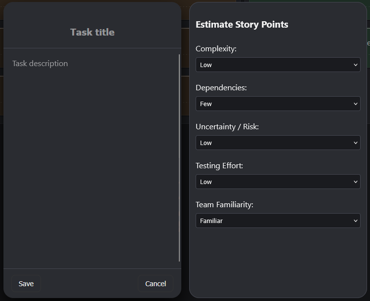

Software Development Student
I work across backend and full-stack systems built with Python, JavaScript, and SQL. Focused on building systems properly and understanding how they work.
T Level student in Software Design and Development — looking for a software development apprenticeship.
Built to deepen my understanding of JavaScript and frontend architecture without frameworks. Implements drag-and-drop with the native HTML5 Drag API and connects to a Flask REST API with MySQL persistence. Features a built-in story point estimator and support for local or database storage.
Built the entire frontend from scratch without libraries or frameworks to strengthen my understanding of JavaScript and the DOM. The result is a lightweight, responsive kanban board with custom state handling and native drag-and-drop.
The story point estimator applies a weighted calculation across complexity, uncertainty, development time, and testing effort to derive a Fibonacci-based estimate — keeping sprint planning consistent and removing guesswork.
A RESTful API built to power the Dralix kanban board, handling task management through structured endpoints. Implements database persistence using MySQL with Python managing backend logic and request handling. Designed to separate frontend interaction from server-side data management.
@app.route("/api/tasks", methods=["POST"])
def create_task():
from models import Task
data = request.get_json()
task = Task(
title=data.get("title", "No title"),
status=data.get("status", "todo"),
description=data.get("description", ""),
storypoint=data.get("storyPoint", 1)
)
db.session.add(task)
db.session.commit()
return jsonify({"message": "Task created"}), 201Built to deepen my understanding of API development, routing patterns, and backend architecture through hands-on implementation.
class Task(db.Model):
id = db.Column(db.Integer, primary_key=True)
title = db.Column(db.String(150), nullable=False)
description = db.Column(db.Text)
status = db.Column(db.String(50), default="todo")
storypoint = db.Column(db.Integer, default=1)The Task model defines how data is structured and stored. It enforces consistent formatting between the API and MySQL database, acting as the core data layer for the application.
Email damienhiggins15@gmail.com
GitHub github.com/damein8594